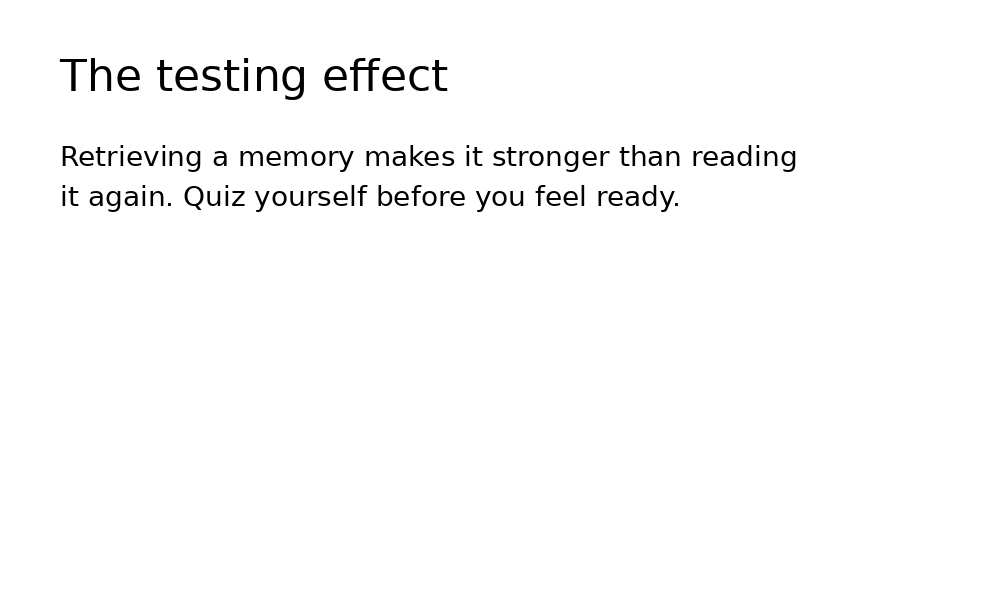

Watching a seed sprout
We planted a bean in a glass jar lined with wet paper, so the root could be seen from the first day. Each morning we drew what had changed and wrote down the time, the warmth of the room and how damp the paper felt.
By the third day the seed coat had split and a pale root had pushed down along the glass. The drawing below shows the jar on that morning.

On the fifth day the shoot turned upward toward the window, even when we turned the jar around. We compare the drawings from each day to see how quickly the root and the shoot grew, and what that says about where a young plant spends its first energy.